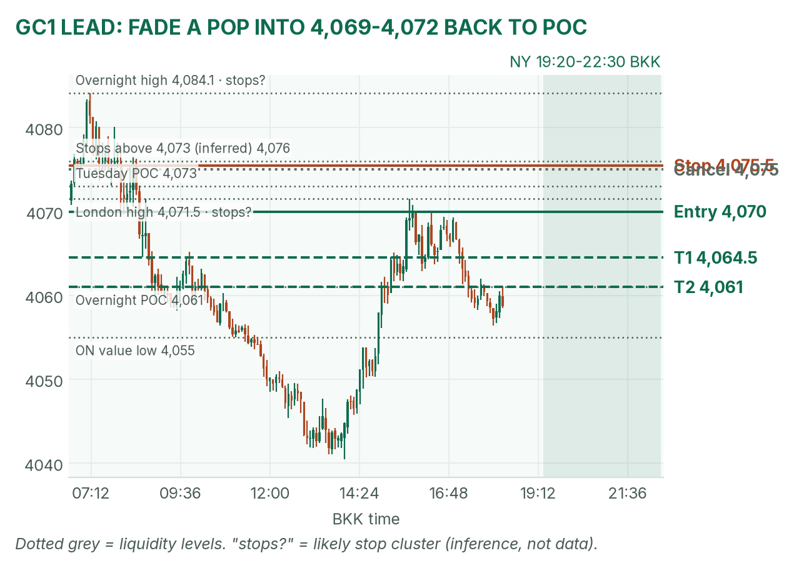
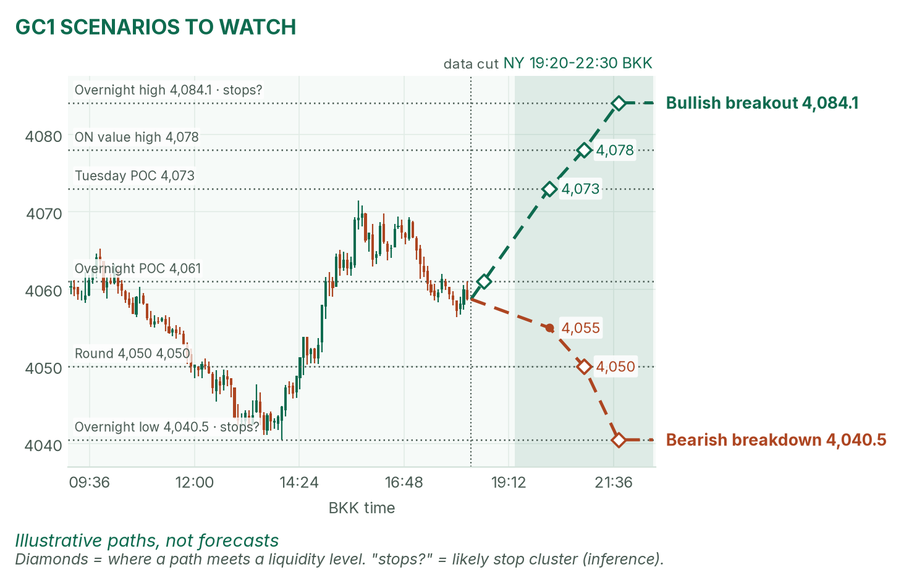
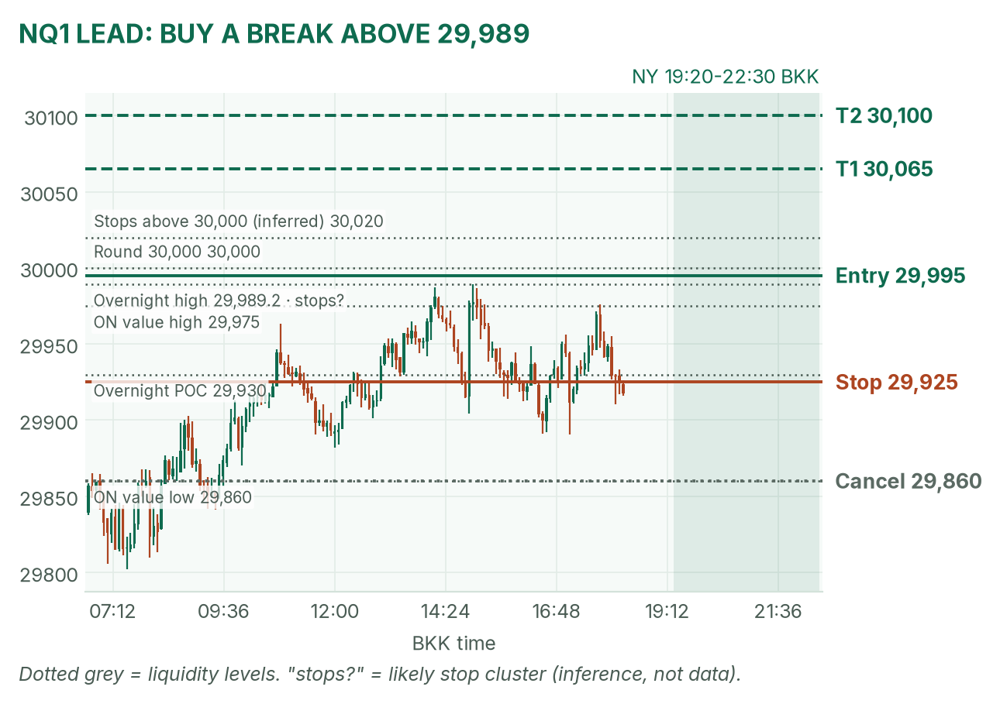
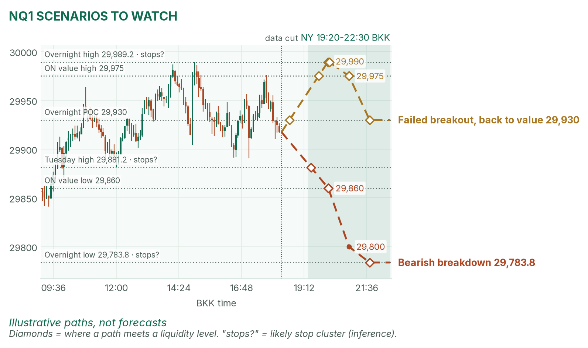

Fed day, quiet hands. Gold sits on its busiest price; Nasdaq leans on 30,000.
Window 19:20–22:30 BKK (US clocks change Nov 1). Data cut 18:20 BKK: GC 4,058.7, NQ 29,917.5 (TopstepX Z26, last complete 5m bar). Levels only. Ideas, not advice.
Summary
GC: fade a failed pop into 4,069–4,072. Stop 4,075.5, target 4,061, the overnight POC (1.6R). About 38%.
NQ: buy a 5m close above 29,989, the overnight high. Stop 29,925, target 30,100 (1.5R). About 37%.
Three releases inside the window. No entries 19:25–19:32, 20:40–20:47 or 21:25–21:32.
The Fed decides at 01:00, after the window. Flat by 22:30, no matter what.
The market story
Gold opened Asia near 4,074, slid to 4,040.5 at 14:00, then bounced back to 4,071.5 in London. It now sits right on the overnight POC (the price where the most contracts traded), 4,061. Nasdaq futures climbed all night and stalled at 29,989, just short of 30,000.
The drivers come from April's pre-NY draft. Oil is the big one: Brent near $115 after a claimed Houthi strike on a Saudi oil port. Dearer oil means inflation worry, so yields rose (the 10-year near 5%), and bond prices fell. Gold pays no interest, so a higher yield raises its opportunity cost (what you give up by holding it). Nasdaq has AI demand behind it.
How I read it: gold is a range inside a downtrend, so I sell its pops. Nasdaq has momentum, so I buy its breakouts.
News (BKK)
Time
Event
Forecast
Prior
Read
19:30
US goods trade balance, Sep
−$130.4B
−$132.1B
Low impact.
20:45
Bank of Canada rate
2.50%
2.25%
A rate hike (raising the cost of borrowing) is expected. Mostly moves the Canadian dollar.
21:30
US crude stocks (EIA)
+0.1M bbl
−3.1M bbl
A big draw lifts oil, then yields: bad for gold.
01:00 / 01:30
Fed decision, Warsh press conference
4.00% (top of range)
4.00%
After the window. A hold is expected.
No-trade zones: 19:25–19:32, 20:40–20:47 and 21:25–21:32.
Levels to watch
Level
GC
NQ
Overnight high
4,084.1
29,989.25
Tuesday high / low
4,079.4 / 4,001.6
29,881.25 / 29,288
Tuesday POC
4,073
29,810
Overnight value area (where 70% of volume traded)
4,055–4,078
29,860–29,975
Overnight POC
4,061
29,930
Overnight low
4,040.5
29,783.75
Typical window range (median / 80th pct, 20 days)
41 / 60 pts
327 / 413 pts
Gold (GC1)
Bias: bearish on the bigger picture, neutral today. London's bounce stopped at 4,071.5, under Tuesday's POC. My NY gold rule takes the COMEX opening range from 19:20 and fades its edges back to the POC.
The trade: fade a failed pop
Entry
4,069–4,072 (plan 4,070): a pop that closes back below it on 5 minutes, after the COMEX range sets and after 19:32
Stop
4,075.5: above Tuesday's POC (4,073), where buy stops likely sit (inference)
Targets
1R partial 4,064.5 · full target 4,061, the overnight POC (1.6R)
Cancel
A 5m close above 4,075 before entry, or no entry by 21:25
Probability
~38%, an estimate. Basis: NY gold opening ranges mostly failed in my Aug–Oct study (not significant); the stop is about 2.3 five-minute ATRs (average bar size, 2.4 pts).
Why: sell where London's buyers ran out, with the yield headwind. No pop, no trade. I won't short 4,058 in the middle. April agrees: her draft says the oil shock weighs on gold. VWAP (volume-weighted average price) is a filter only after 19:50.

GC 5m bars to 18:20 BKK, window shaded. London topped at 4,071.5.

Illustrative paths, not forecasts: the other two setups at liquidity levels (prices where resting orders likely cluster).
Scenarios to watch
Bullish breakout: two 5m closes above 4,073. Aims for 4,078 (value high), then 4,084.1.
Bearish breakdown: a 15m close below 4,055 (value low). Aims for 4,050, then 4,040.5.
Nasdaq (NQ1)
Bias: bullish. Every dip since Asia was bought. My NQ rule trades breaks of the fixed 5-minute range after the 20:30 stock open.
The trade: bullish breakout
Entry
29,995 on a 5m close above 29,989 (overnight high) and the 20:30–20:35 range high, after 20:47
Stop
29,925: back under the overnight POC (29,930)
Targets
1R partial 30,065 · full target 30,100 (1.5R)
Cancel
NQ trades 29,860 (value low) before entry, or no break by 22:00
Probability
~37%, an estimate. Basis: NQ 5-minute range breakouts averaged +0.37R in my study (31 sessions, not significant); 105 points to target is about a third of a typical window.
Why: buy stops likely sit above 30,000 (an inference), and a break there can run. April agrees: AI demand lifts Nasdaq. Fed and Big Tech land tonight; if it fails fast, I don't re-enter.

NQ 5m bars to 18:20 BKK, window shaded. The trigger sits just under the round 30,000.

Illustrative paths, not forecasts: breakdown and failed breakout.
Scenarios to watch
Bearish breakdown: a 5m close under 29,860 and the opening range low. Aims for 29,800, then 29,783.75.
Failed breakout: a poke above 29,989 that closes back under 29,975 within 15 minutes. Aims for 29,930 (POC).
6E (not traded in NY): 1.1146, above the 14:00 low of 1.11345. London's short never triggered; watch the Canada decision for dollar spillover.
Before you click
ORB bases. GC NY: COMEX 19:20 range, ends at the first candle under half the average volume of the first two, fade to POC. NQ: fixed 5-minute range after 20:30, trade breakouts.
Checklist. 1) Room to today's max loss? 2) Within daily rules? 3) No release within 30 minutes? 4) Agrees with the bias? 5) At a marked level? 6) Setup tagged? 7) Entry, stop, 1R partial, target set? 8) Calm, not chasing?
Reset (60 seconds). Breathe in 4, hold 4, out 6, five times. Name the feeling in one word. "Eager"? Wait 5 minutes.